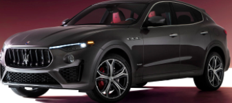

Masserati offers new models just about every year. Those consist of mostly SUV and sports car styles. The least expensive Masseratis are about $80,000, while the upper class of cars is about $150,000.
The Porsche has many sports cars, but they also prouces SUV's and Sudans. One of the most unique features is their rear-engine layout. Porsche made the decision to put the engine in the back so they could say that their sports car oversteers.
The Bently is known to be one of the most reliable and safest luxury car. Due to the fact they are a subsidary of volkswagen the safeness is top of the line. Bentley's are even said to be safer than Audi's and VW's.